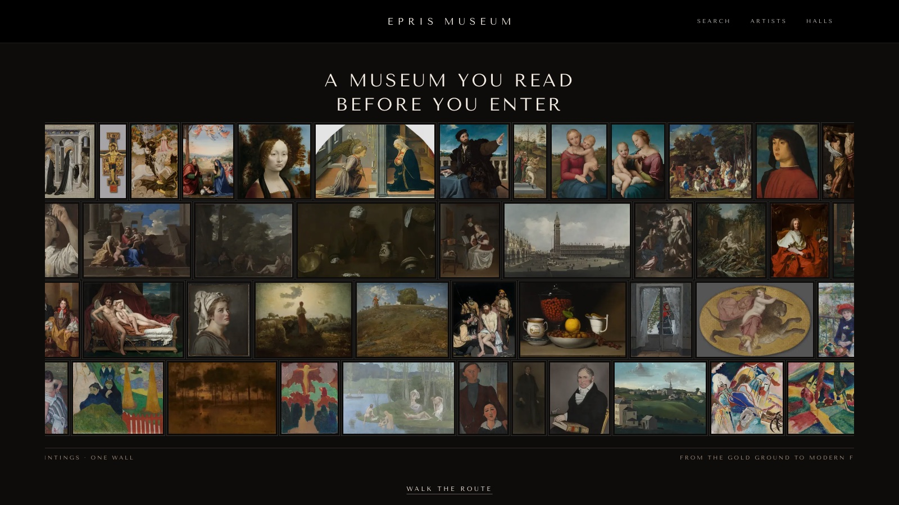
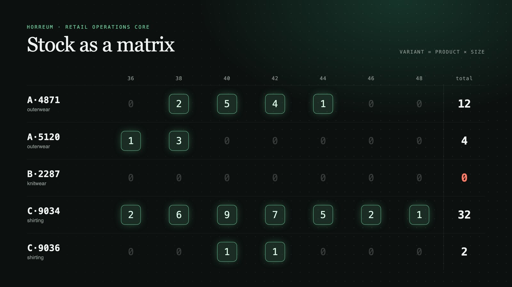
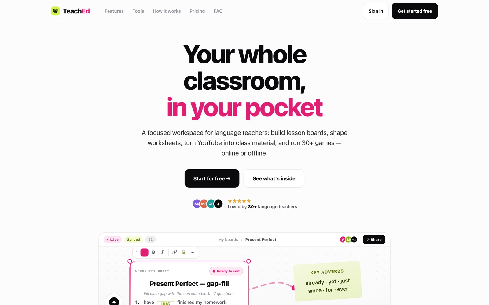
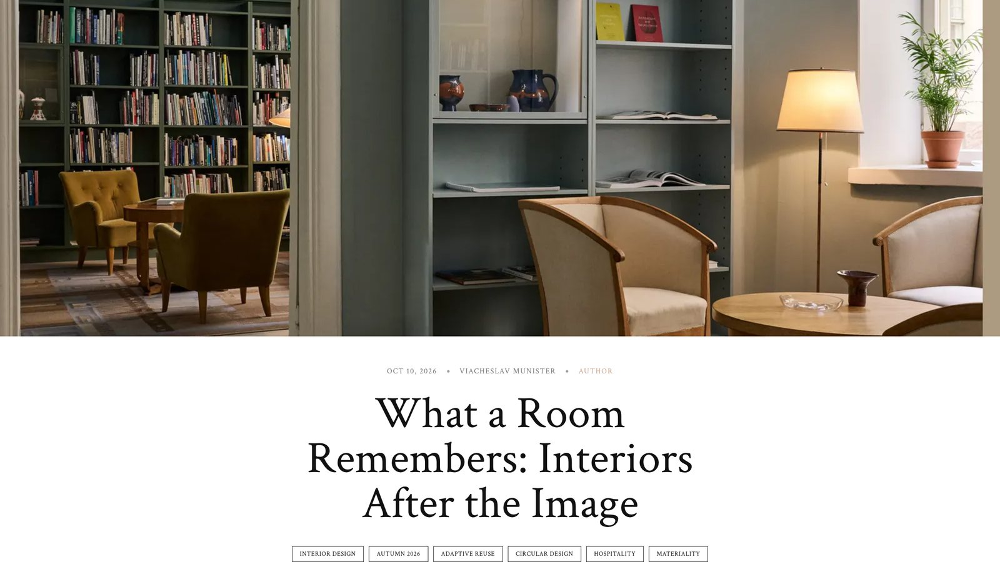
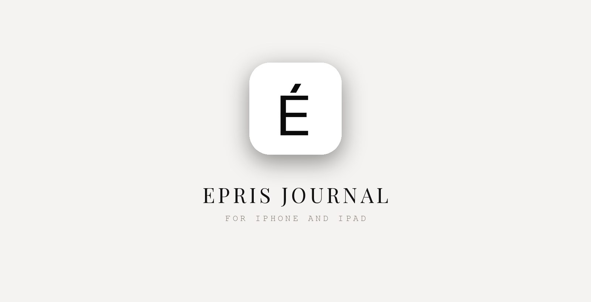
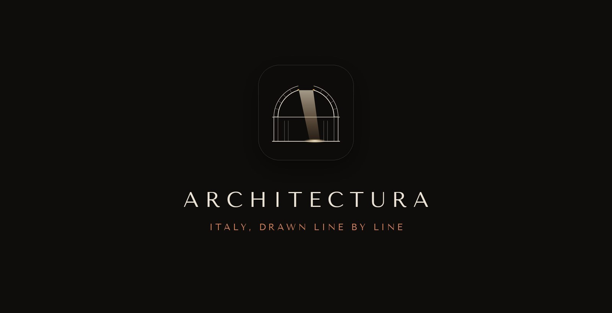
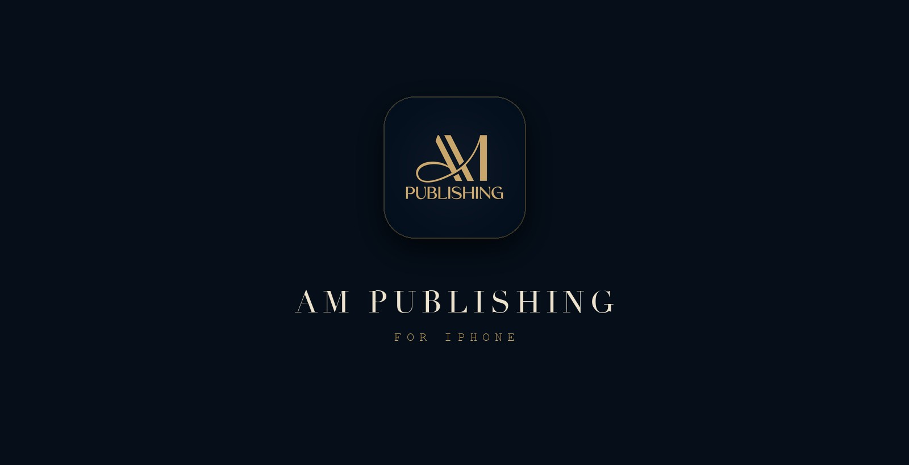
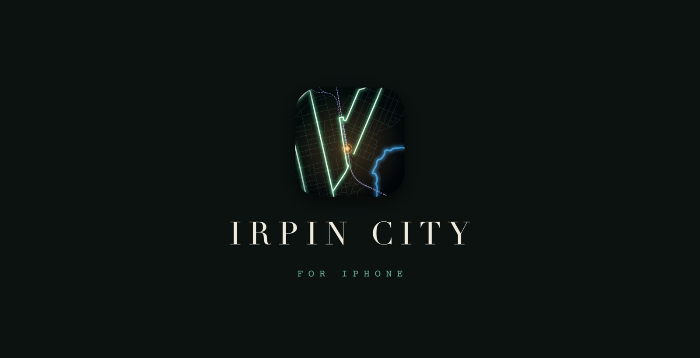
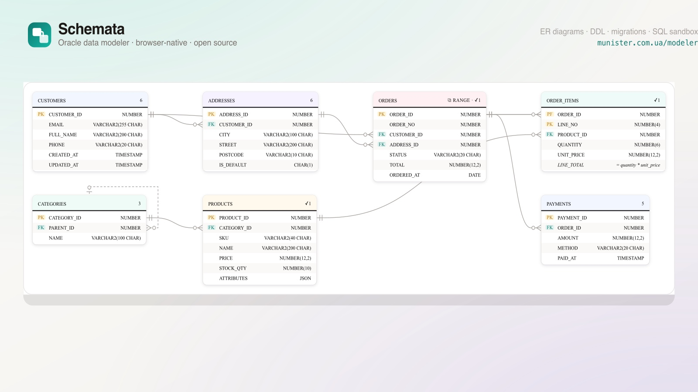

Viacheslav
Munister
Digital systems for research, publishing and operations.
A systems approach to #publishing, #education, #retail operations, #iOS apps, #museums, #research, #data models and #integrations.
Researcher, product architect and developer. I turn complex workflows into working digital products: from requirements and data models to interfaces, integrations and launch. My practice spans publishing, education, retail operations and native iOS apps.
Applied systems practice
Selected live systems, each organised around a concrete research or operational problem, a data model and a maintainable delivery path.

EPRIS Museum
A museum without a building: 583 openly licensed works by 360 artists, hung as one route through 40 halls, each shown at its true scale with source and licence.

Horreum
An operations core for a clothing retailer: schema matching, deterministic record linkage and stock kept correct under concurrent writers.

TeachEd
A workspace for language teachers that turns plans, video and vocabulary into editable lessons, worksheets and more than thirty classroom games.

EPRIS Journal
An independent journal of architecture, design and visual culture, where every piece carries a digital passport: provenance, review and a path for re-use.
MIST Diamond Atelier
A site for an atelier of lab-grown diamond jewellery: collection rooms with live 3D rings built from the workshop’s own drawings, a catalogue the atelier edits itself, consultation booking, a loyalty club and five languages.

EPRIS Journal for iPhone and iPad
The journal’s native app for iPhone and iPad: essays typeset for the screen, full-screen photography and offline reading. No account, no tracking.

Architectura: Italy Drawn
An atlas of Italian architecture drawn line by line: 47 measured plates from Aosta to Sicily, 599 named parts, the live sun of Rome through the Pantheon’s oculus, 3D models and seven courses with exams and diplomas.

AM Publishing for iPhone
The publisher’s app: the catalogue with covers and excerpts, a literary workshop with quizzes, events in Berlin and a reader’s card with points and medals. Free; reader data stays on the device.

Irpin City for iPhone
An independent guide to Irpin: trains and minibuses, a 3D map with shelters, air raid alerts, DTEK outages, utilities and 50 routes. Free; your data stays on the phone.

Schemata
A browser-native relational modeller for Oracle: tables and relations like a design tool, DDL import and export, and an SQL sandbox. No build step, no backend.

Fuzzy Risk Assessment System
A software complex for intelligent assessment of financial risks built on fuzzy logic and Boolean minimisation. Registered with the Ukrainian National Office of Intellectual Property and Innovation on 12 February 2026; author and sole owner of the economic rights.
From problem to working product
Product decisions, hands-on engineering and research, connected across the full delivery cycle.
Product strategy and requirements
I analyse workflows, define requirements and priorities, and shape roadmaps, information architecture and UX. I connect product decisions to the people, processes and constraints the system has to serve.
System architecture and data
I model entities, relationships and business rules in PostgreSQL, SQLite and Oracle. I build REST services and import pipelines with TypeScript, Python and SQL, including schema matching, record linkage and stock integrity under concurrent updates.
Web platforms and interfaces
I build editorial systems, learning workspaces and browser-based tools with React, Next.js or plain HTML, CSS and JavaScript. The work includes responsive layouts, editing workflows and the connections between the interface and its data.
Native iOS products
I develop iPhone and iPad apps in Swift and SwiftUI, taking the product from screen structure to App Store release. My published work brings together native reading, full-screen imagery, offline content and interactive architectural material.
AI and content integrations
I integrate LLM APIs into editorial and educational workflows, with generated material kept editable and reviewable. I also connect external content, IIIF collections and geographic data, working with formats, time zones and authentication.
Deployment and operations
I deploy and maintain services on Linux with nginx, TLS, systemd, Docker and GitHub Actions. Release workflows, backups and technical documentation are part of delivery, so the product can be updated and supported after launch.
Editorial work and cultural collections
I research, write and edit long-form pieces, conduct interviews and plan issues. Museum curation and picture research extend this practice into provenance, licensing, digital passports and collections that readers can navigate and reuse.
Applied research and automation
My peer-reviewed work covers industrial automation and measurement, edge computing and machine learning. This research informs how I approach operational data, control systems and decisions made under practical constraints.

Linux Essentials
Verified badge for the NDG Linux Essentials course: command line, files and permissions, processes, users and system administration basics.
Verify on netacad.comResearch
29 peer-reviewed papers, 2021 to 2026, primarily in Scopus-indexed proceedings. The research informs the practical work above rather than sitting beside it.
Industrial automation and measurement: edge computing and machine learning for decisions made under real constraints.
Writing
Essays, criticism and interviews in EPRIS Journal. 56 pieces, newest first.
 Oct 22, 2026
Oct 22, 2026
The Body as a Place: Antony Gormley and the Sculpture of Standing Still
Essay · Antony Gormley · Sculpture Oct 21, 2026
Oct 21, 2026
A Cathedral Cut from Grain: How Cape Town’s Silo Became Zeitz MOCAA
Essay · Zeitz Mocaa · Heatherwick Studio Oct 18, 2026
Oct 18, 2026
Stephen Spartana: My Photographs Are My Paints
Interview · Photography · Fine Art Oct 16, 2026
Oct 16, 2026
Nicolas Delarre: The Structure Was Already There
Interview · Photography · Architecture Oct 15, 2026
Oct 15, 2026
Gayane Arushanian: Home Is Something You Carry
Interview · Art · AbstractionMost of this work is about making archives, collections and records easier to find, read and reuse.
Member of two French associations that research cultural heritage and keep it close to lived places and public conversation.
- 01En Quête de Patrimoine
- 02Histoire dʼen Parler
Systems analysis and architecture, operational data models, editorial research infrastructure, ERP, IIoT and edge computing, machine learning and interface prototyping.